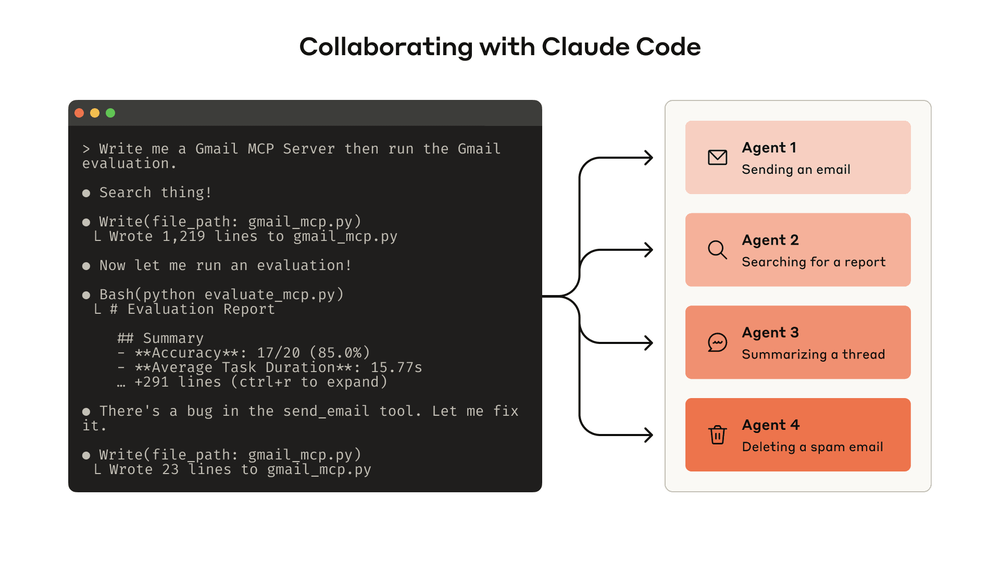
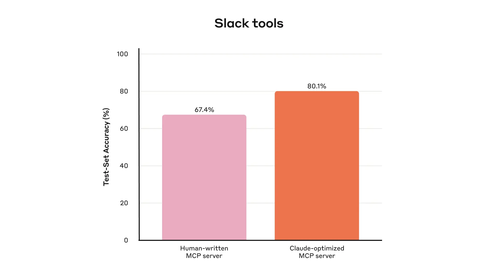
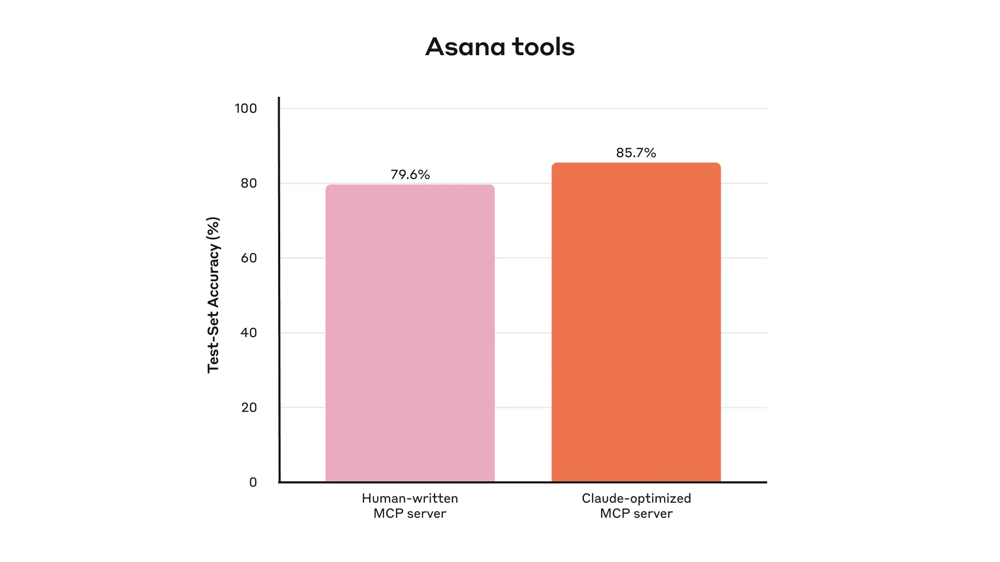
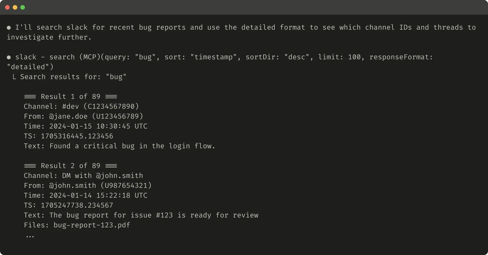
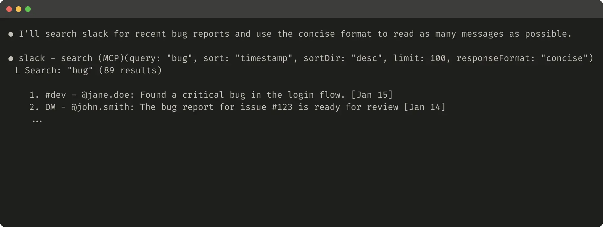
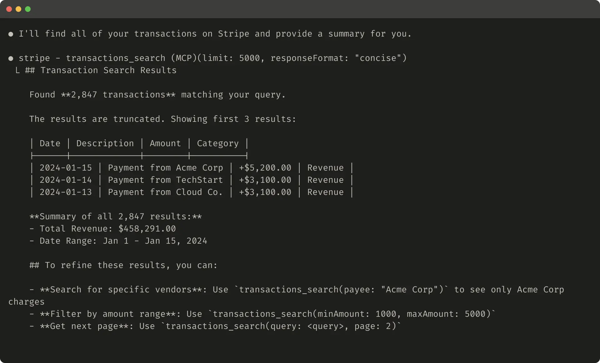
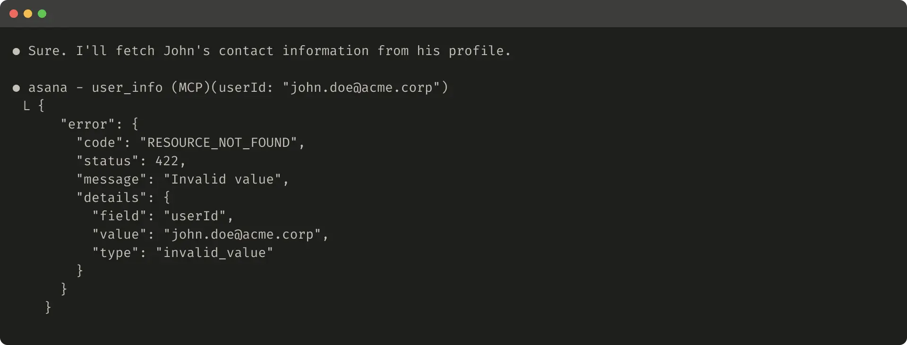
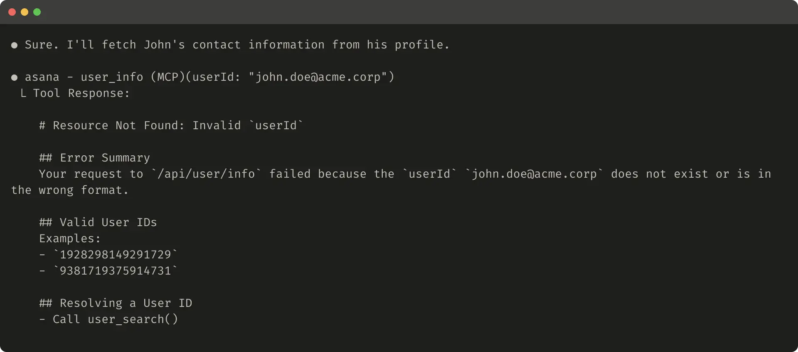

工程（Engineering） 2025 年 9 月 11 日 已发布 2025 年 9 月 11 日 团队 工程 主题
相关文章 * 工程 2026 年 1 月 9 日 揭开AI智能体评估的神秘面纱
阅读更多 模型上下文协议（MCP） 能为 LLM 智能体赋能，让它们借助可能多达数百种工具去解决真实世界的任务。但我们要如何让这些工具尽可能高效？ 在这篇文章中，我们介绍我们总结出的、用于提升各类智能体 AI 系统性能的最有效技巧。1 我们先介绍你可以如何： * 构建并测试工具的原型 * 与智能体一起创建并运行对工具的全面评估 * 与 Claude Code 这类智能体协作，自动提升工具的性能
最后，我们给出在此过程中总结出的编写高质量工具的关键原则： * 选择正确的工具去实现（以及不去实现） * 为工具设置命名空间，以界定功能上的清晰边界 * 从工具向智能体返回有意义的上下文 * 优化工具响应以提升 token 效率 * 对工具描述与规格做提示词工程

构建评估能让你系统地衡量工具的性能。你可以用 Claude Code 依据这项评估自动优化工具。在计算领域，确定性系统在给定相同输入时每次都产生相同输出，而 非确定性 系统——比如智能体——即便起始条件相同，也可能给出各不相同的回应。
传统上编写软件时，我们是在确定性系统之间建立一份契约。例如，像 getWeather(“NYC”) 这样的函数调用，每次被调用时都会以完全相同的方式获取纽约市的天气。
工具是一类新的软件，它体现的是确定性系统与非确定性智能体之间的契约。当用户问「今天我要带伞吗？」时，智能体可能调用天气工具，也可能凭常识作答，甚至先追问一句关于位置的澄清问题。有时，智能体还可能产生幻觉，或干脆没能弄明白该如何使用某个工具。
这意味着，为智能体编写软件时，需要从根本上重新思考我们的方法：不能再用为其他开发者或系统编写函数与 API 的方式来写工具和 MCP 服务器，而必须为智能体来设计它们。
我们的目标是扩大智能体能够有效施展的范围，让它们借助工具、采取多种成功策略去解决广泛的任务。所幸，以我们的经验，对智能体最「顺手」的工具，往往对人类来说也出人意料地直观易懂。
在本节中，我们介绍如何与智能体协作，既用它来编写工具，也用它来改进你交给它们的工具。先快速搭起工具原型并在本地测试，接着运行一次全面评估来衡量后续改动。与智能体并肩工作，你可以反复执行「评估—改进」这一循环，直到智能体在真实任务上取得出色表现。
不亲自上手，很难预判哪些工具对智能体顺手、哪些不顺手。先快速搭起工具原型。如果你用 Claude Code 来编写工具（可能一次成型），把工具所依赖的软件库、API 或 SDK（可能也包括 MCP SDK）的文档交给 Claude 会很有帮助。对 LLM 友好的文档，通常能在官方文档站点里扁平的 llms.txt 文件中找到（这里是我们的 API 文档）。
把工具封装进 本地 MCP 服务器 或 桌面扩展（DXT），就能在 Claude Code 或 Claude 桌面应用中连接并测试它们。
要把本地 MCP 服务器接入 Claude Code，运行 claude mcp add <name> <command> [args...]。
要把本地 MCP 服务器或 DXT 接入 Claude 桌面应用，分别前往 Settings > Developer 或 Settings > Extensions。
工具也可以直接传入 Anthropic API 调用，用于编程式测试。
亲自测试工具，找出任何粗糙之处。收集用户反馈，围绕你期望工具支撑的用例与提示词建立直觉。
接下来，你需要通过运行评估来衡量 Claude 使用工具的效果。先生成大量植根于真实用途的评估任务。我们建议与智能体协作，帮你分析结果并确定如何改进工具。在我们的 工具评估手册 中可以看到这一流程的完整端到端示例。

我们内部 Slack 工具在留出测试集上的表现有了早期原型，Claude Code 就能快速探查你的工具，生成数十组提示词与回答对。提示词应取材于真实用途，并基于真实的数据源与服务（例如内部知识库与微服务）。我们建议避开过于简单或流于表面的「沙盒」环境——它们无法以足够的复杂度对工具做压力测试。强有力的评估任务可能需要多次工具调用，甚至多达数十次。 以下是一些高质量任务的例子： * 下周安排一次与 Jane 的会议，讨论我们最新的 Acme Corp 项目。附上上次项目规划会议的纪要，并预订一间会议室。 * 客户 ID 9182 反映，一次购买尝试被扣款三次。找出所有相关日志条目，并判断是否有其他客户受到同一问题影响。 * 客户 Sarah Chen 刚提交了注销申请。准备一份挽留方案。请确定：(1) 他们为何离开，(2) 哪种挽留方案最有说服力，以及 (3) 在给出方案前我们应当留意的风险因素。
以下是一些较弱的任务：
* 下周安排一次与 jane@acme.corp 的会议。
* 在支付日志中搜索 purchase_complete 和 customer_id=9182。
* 按客户 ID 45892 查找注销申请。
每条评估提示词都应配一个可验证的回答或结果。验证器可以简单到在标准答案与采样回答之间做精确字符串比较，也可以高级到请 Claude 来评判回答。避免过于严格的验证器——它们会因格式、标点或合理的替代表述这类无关差异而否决正确答案。 对每一组提示词—回答对，你还可以选择额外指定期望智能体在解题时调用哪些工具，用来衡量智能体在评估中是否成功领会了每个工具的用途。不过，由于正确解题可能存在多条有效路径，尽量别过度指定或对策略过拟合。
我们建议用直接的 LLM API 调用以编程方式运行评估。使用简单的智能体循环（用 while 循环包裹交替进行的 LLM API 调用与工具调用）：每个评估任务一个循环。每个评估智能体应只拿到单个任务提示词和你的工具。
在评估智能体的系统提示词里，我们建议不仅要求智能体输出结构化的回答块（供验证使用），还要求输出推理块与反馈块。让智能体在工具调用块与回答块 之前 输出这些内容，可能通过触发思维链（CoT）行为来提升 LLM 的有效智能。
如果你用 Claude 运行评估，可以开启 交错思考，「开箱即用」地获得类似能力。这能帮你探究智能体为何调用或不调用某些工具，并凸显工具描述与规格中值得改进的具体环节。
除顶层准确率外，我们建议还收集其他指标，例如单次工具调用与整项任务的总耗时、工具调用总次数、token 总消耗量以及工具报错。跟踪工具调用有助于揭示智能体常走的流程，并为工具合并提供机会。

我们内部 Asana 工具在留出测试集上的表现在发现问题、以及就自相矛盾的工具描述、低效的工具实现、令人困惑的工具 schema 等方方面面提供反馈上，智能体是得力伙伴。但请记住，智能体在反馈与回答里省略的内容，往往比它写进去的更重要。LLM 并不总能 言如其意。
观察智能体在哪些地方卡住或困惑。通读评估智能体的推理与反馈（或 CoT），找出粗糙之处。审阅原始对话记录（含工具调用与工具响应），捕捉任何未在智能体 CoT 中明说的行为。要读出字里行间的意思；记住，你的评估智能体未必知道正确答案与策略。
分析工具调用指标。大量冗余的工具调用可能说明该重新调整分页或 token 上限参数；因参数非法而产生的大量工具报错，则可能说明工具需要更清晰的描述或更好的示例。我们推出 Claude 的 网页搜索工具 时，发现 Claude 会多此一举地在工具的 query 参数后追加 2025，使搜索结果产生偏差并拖累表现（我们通过改进工具描述把 Claude 引回了正轨）。
你甚至可以让智能体替你分析结果并改进工具。只需把评估智能体的对话记录拼接起来，粘贴进 Claude Code。Claude 擅长分析对话记录、一次性重构大量工具——例如，确保新改动落地后工具实现与描述仍彼此自洽。 事实上，本文大部分建议都来自我们用 Claude Code 反复优化内部工具实现的过程。我们的评估建立在内部工作区之上，复刻了内部工作流的复杂度，包含真实的项目、文档与消息。 我们依靠留出测试集来确保不会对「训练」评估过拟合。这些测试集显示，即便在「专家级」工具实现已取得的成果之上，我们仍能榨出额外的性能提升——无论那些工具是研究员手写，还是由 Claude 自己生成。 在下一节，我们会分享这一过程中总结的部分经验。
在本节中，我们把所得经验提炼为几条编写高效工具的指导原则。
工具并非越多越好。我们观察到的一个常见错误，是工具只是把现有软件功能或 API 端点包了一层——全然不管这些工具是否适合智能体。原因在于，智能体相对传统软件有着不同的「可供性」（affordances），也就是说，它们感知「自己能用这些工具采取哪些潜在行动」的方式并不一样。
LLM 智能体的「上下文」有限（也就是它一次能处理的信息量有上限），而计算机内存既便宜又充裕。想想在通讯录里查找联系人的任务。传统软件程序可以高效地存储联系人列表并逐个处理，查完一个再看下一个。
然而，如果 LLM 智能体用的工具会返回所有联系人，它就得逐 token 地把每一条读一遍，把有限的上下文空间浪费在无关信息上（想象在通讯录里从第一页逐页翻到最后一页来找人——也就是暴力搜索）。更好、更自然的做法（对智能体和人类都一样）是先直接翻到相关那一页（比如按字母顺序定位）。
我们建议先精心构建少数几个针对特定高影响工作流的工具，让它们与评估任务相匹配，再由此扩展。在通讯录的例子里，你可能会选择实现 search_contacts 或 message_contact 工具，而不是 list_contacts 工具。
工具可以整合功能，在底层一次性处理可能 多个 离散操作（或 API 调用）。例如，工具可以用相关元数据丰富工具响应，或在单次工具调用中完成常被串联起来的多步任务。
以下是一些例子：
* 与其实现 list_users、list_events 与 create_event 三个工具，不如考虑实现一个 schedule_event 工具，由它查找空闲时段并安排日程。
* 与其实现 read_logs 工具，不如考虑实现一个 search_logs 工具，只返回相关日志行及少量上下文。
* 与其实现 get_customer_by_id、list_transactions 与 list_notes 工具，不如实现一个 get_customer_context 工具，一次性汇总某客户近期且相关的全部信息。
确保你构建的每个工具都有清晰而独特的用途。在能访问同样底层资源的前提下，工具应让智能体像人类那样把任务拆解并逐一解决，同时减少本会被中间输出消耗掉的上下文。 工具过多或彼此重叠，也会分散智能体的注意力，让它难以采取高效策略。审慎、有选择地规划该构建（以及不该构建）哪些工具，回报会相当可观。
你的 AI 智能体可能会接入数十个 MCP 服务器、数百种不同工具——其中还包括其他开发者的工具。当工具功能重叠或用途含糊时，智能体就可能搞不清该用哪一个。
设置命名空间（把相关工具归到同一前缀下）有助于在大量工具之间划出边界；MCP 客户端有时默认就会这么做。例如，按服务（如 asana_search、jira_search）与按资源（如 asana_projects_search、asana_users_search）给工具加命名空间，能帮助智能体在恰当的时机选对工具。
我们发现，在前缀式与后缀式命名空间之间做选择，对工具使用评估有不小的影响。效果因 LLM 而异，我们建议你依据自己的评估来选定命名方案。
智能体可能调错工具、用错参数调对的工具、调用次数太少，或错误地处理工具响应。有选择地实现那些名称反映任务自然拆分的工具，你既能减少加载进智能体上下文的工具数量与工具描述，又能把智能体的一部分计算从上下文卸载回工具调用本身。这降低了智能体整体出错的风险。
同理，工具实现应当只把高信息量的内容返回给智能体。它们应把情境相关性置于灵活性之上，并避开底层技术标识符（例如 uuid、256px_image_url、mime_type）。像 name、image_url、file_type 这样的字段，更可能直接为智能体的后续行动与回答提供依据。
智能体处理自然语言名称、术语或标识符，也往往比处理晦涩的标识符成功得多。我们发现，仅仅把任意的字母数字 UUID 解析成语义更明确、更易理解的语言（甚至换成从 0 开始编号的 ID 方案），就能通过减少幻觉显著提升 Claude 在检索任务中的精度。
在某些情况下，智能体可能需要同时与自然语言和技术标识符两类输出打交道，哪怕只是为了触发后续工具调用（例如 search_user(name=’jane’) → send_message(id=12345)）。你可以在工具里暴露一个简单的 response_format 枚举参数，让智能体控制工具返回 “concise” 或 “detailed” 响应（见下图），从而两者兼得。
你还可以增加更多格式以获得更大灵活性，类似于 GraphQL 里可以精确挑选想接收哪些信息。下面是一个用于控制工具响应详略程度的 ResponseFormat 枚举示例：
enum ResponseFormat {
DETAILED = "detailed",
CONCISE = "concise"
}
下面是一个详细工具响应的示例（206 个 token）：

下面是一个简洁工具响应的示例（72 个 token）：
Slack 话题串及其回复由唯一的thread_ts 标识，抓取回复时需要它。可以从 “detailed” 工具响应中取得 thread_ts 及其他 ID（channel_id、user_id），以便发起需要这些 ID 的后续工具调用。“concise” 工具响应只返回话题内容、不含 ID。在这个例子里，使用 “concise” 工具响应只消耗约 ⅓ 的 token。
就连工具响应的结构——例如 XML、JSON 还是 Markdown——也会影响评估表现：并不存在放之四海皆准的方案。这是因为 LLM 是在下一 token 预测上训练的，往往在与其训练数据相符的格式上表现更好。最优响应结构会因任务与智能体而大不相同。我们建议你依据自己的评估挑选最佳响应结构。
优化上下文的质量很重要，但优化工具响应中返回给智能体的上下文 数量 同样重要。 我们建议对任何可能吃掉大量上下文的工具响应，组合实现分页、范围选择、过滤和／或截断，并配上合理的默认参数值。对 Claude Code，我们默认把工具响应限制在 25,000 个 token。我们预期智能体的有效上下文长度会随时间增长，但对上下文高效工具的需求会一直存在。 如果你选择截断响应，务必用有益的指令引导智能体。你可以直接鼓励智能体采取更省 token 的策略，比如在知识检索任务里做多次小而精准的搜索，而非一次宽泛的大搜索。同样，如果某次工具调用报错（例如输入校验时），你可以对错误响应做提示词工程，清楚传达具体且可操作的改进建议，而不是抛出含糊的错误码或堆栈回溯。 下面是一个被截断的工具响应示例：

下面是一个无益的错误响应示例：
下面是一个有益的错误响应示例：
工具截断与错误响应能够引导智能体走向更省 token 的工具使用行为（使用过滤器或分页），或给出格式正确的工具输入示例。现在谈到改进工具最有效的方法之一：对工具描述与规格做提示词工程。由于它们会被加载进智能体的上下文，合起来就能把智能体引向高效的工具调用行为。
编写工具描述与规格时，想象你会怎样向团队里一位新同事介绍这个工具。想想你可能不自觉带上的背景——专门的查询格式、冷门术语的定义、底层资源之间的关系——并把它写明。清楚地描述（并用严格的数据模型加以约束）预期的输入与输出，以消除歧义。尤其是，输入参数应当命名得毫无二义性：与其用名为 user 的参数，不如试试名为 user_id 的参数。
有了评估，你就能更有把握地衡量提示词工程的效果。哪怕对工具描述做微小改进，也可能带来显著提升。在我们对工具描述做了精确打磨之后，Claude Sonnet 3.5 在 SWE-bench Verified 评估上取得了当时最先进的成绩，大幅降低了错误率并提高了任务完成度。
更多工具定义的最佳实践，见我们的 开发者指南。如果你在为 Claude 构建工具，我们还建议读一读工具是如何被动态加载进 Claude 的 系统提示词。最后，如果你在为 MCP 服务器编写工具，工具注解 有助于说明哪些工具需要开放世界访问，或会做出破坏性改动。
要为智能体构建高效工具，我们需要把软件开发实践从可预测、确定性的模式，重新转向非确定性的模式。 通过本文所述的这套迭代、评估驱动的流程，我们找出了让工具奏效的一贯规律：高效的工具都经过有意而清晰的定义，审慎地使用智能体上下文，能在多样的工作流中组合起来，并让智能体凭直觉解决真实世界的任务。 未来，我们预期智能体与世界交互的具体机制会不断演进——从 MCP 协议的更新，到底层 LLM 本身的升级。有了这套系统化的、评估驱动的工具改进方法，我们就能确保：随着智能体变得更强，它们所使用的工具也会同步演进。
由 Ken Aizawa 撰写，并得到以下同事的宝贵贡献：Research（Barry Zhang、Zachary Witten、Daniel Jiang、Sami Al-Sheikh、Matt Bell、Maggie Vo）、MCP（Theodora Chu、John Welsh、David Soria Parra、Adam Jones）、Product Engineering（Santiago Seira）、Marketing（Molly Vorwerck）、Design（Drew Roper）以及 Applied AI（Christian Ryan、Alexander Bricken）。 1不包括训练底层 LLM 本身。
Published Sep 11, 2025 Team Engineering Topics
Related articles * Engineering Jan 9, 2026 Demystifying evals for AI agents
View more The Model Context Protocol (MCP) can empower LLM agents with potentially hundreds of tools to solve real-world tasks. But how do we make those tools maximally effective? In this post, we describe our most effective techniques for improving performance in a variety of agentic AI systems1. We begin by covering how you can: * Build and test prototypes of your tools * Create and run comprehensive evaluations of your tools with agents * Collaborate with agents like Claude Code to automatically increase the performance of your tools
We conclude with key principles for writing high-quality tools we’ve identified along the way: * Choosing the right tools to implement (and not to implement) * Namespacing tools to define clear boundaries in functionality * Returning meaningful context from tools back to agents * Optimizing tool responses for token efficiency * Prompt-engineering tool descriptions and specs
Building an evaluation allows you to systematically measure the performance of your tools. You can use Claude Code to automatically optimize your tools against this evaluation.
In computing, deterministic systems produce the same output every time given identical inputs, while non-deterministic systems—like agents—can generate varied responses even with the same starting conditions.
When we traditionally write software, we’re establishing a contract between deterministic systems. For instance, a function call like getWeather(“NYC”) will always fetch the weather in New York City in the exact same manner every time it is called.
Tools are a new kind of software which reflects a contract between deterministic systems and non-deterministic agents. When a user asks "Should I bring an umbrella today?,” an agent might call the weather tool, answer from general knowledge, or even ask a clarifying question about location first. Occasionally, an agent might hallucinate or even fail to grasp how to use a tool.
This means fundamentally rethinking our approach when writing software for agents: instead of writing tools and MCP servers the way we’d write functions and APIs for other developers or systems, we need to design them for agents.
Our goal is to increase the surface area over which agents can be effective in solving a wide range of tasks by using tools to pursue a variety of successful strategies. Fortunately, in our experience, the tools that are most “ergonomic” for agents also end up being surprisingly intuitive to grasp as humans.
In this section, we describe how you can collaborate with agents both to write and to improve the tools you give them. Start by standing up a quick prototype of your tools and testing them locally. Next, run a comprehensive evaluation to measure subsequent changes. Working alongside agents, you can repeat the process of evaluating and improving your tools until your agents achieve strong performance on real-world tasks.
It can be difficult to anticipate which tools agents will find ergonomic and which tools they won’t without getting hands-on yourself. Start by standing up a quick prototype of your tools. If you’re using Claude Code to write your tools (potentially in one-shot), it helps to give Claude documentation for any software libraries, APIs, or SDKs (including potentially the MCP SDK) your tools will rely on. LLM-friendly documentation can commonly be found in flat llms.txt files on official documentation sites (here’s our API’s).
Wrapping your tools in a local MCP server or Desktop extension (DXT) will allow you to connect and test your tools in Claude Code or the Claude Desktop app.
To connect your local MCP server to Claude Code, run claude mcp add <name> <command> [args...].
To connect your local MCP server or DXT to the Claude Desktop app, navigate to Settings > Developer or Settings > Extensions, respectively.
Tools can also be passed directly into Anthropic API calls for programmatic testing.
Test the tools yourself to identify any rough edges. Collect feedback from your users to build an intuition around the use-cases and prompts you expect your tools to enable.
Next, you need to measure how well Claude uses your tools by running an evaluation. Start by generating lots of evaluation tasks, grounded in real world uses. We recommend collaborating with an agent to help analyze your results and determine how to improve your tools. See this process end-to-end in our tool evaluation cookbook. Held-out test set performance of our internal Slack tools
With your early prototype, Claude Code can quickly explore your tools and create dozens of prompt and response pairs. Prompts should be inspired by real-world uses and be based on realistic data sources and services (for example, internal knowledge bases and microservices). We recommend you avoid overly simplistic or superficial “sandbox” environments that don’t stress-test your tools with sufficient complexity. Strong evaluation tasks might require multiple tool calls—potentially dozens. Here are some examples of strong tasks: * Schedule a meeting with Jane next week to discuss our latest Acme Corp project. Attach the notes from our last project planning meeting and reserve a conference room. * Customer ID 9182 reported that they were charged three times for a single purchase attempt. Find all relevant log entries and determine if any other customers were affected by the same issue. * Customer Sarah Chen just submitted a cancellation request. Prepare a retention offer. Determine: (1) why they're leaving, (2) what retention offer would be most compelling, and (3) any risk factors we should be aware of before making an offer.
And here are some weaker tasks:
* Schedule a meeting with jane@acme.corp next week.
* Search the payment logs for purchase_complete and customer_id=9182.
* Find the cancellation request by Customer ID 45892.
Each evaluation prompt should be paired with a verifiable response or outcome. Your verifier can be as simple as an exact string comparison between ground truth and sampled responses, or as advanced as enlisting Claude to judge the response. Avoid overly strict verifiers that reject correct responses due to spurious differences like formatting, punctuation, or valid alternative phrasings. For each prompt-response pair, you can optionally also specify the tools you expect an agent to call in solving the task, to measure whether or not agents are successful in grasping each tool’s purpose during evaluation. However, because there might be multiple valid paths to solving tasks correctly, try to avoid overspecifying or overfitting to strategies.
We recommend running your evaluation programmatically with direct LLM API calls. Use simple agentic loops (while-loops wrapping alternating LLM API and tool calls): one loop for each evaluation task. Each evaluation agent should be given a single task prompt and your tools.
In your evaluation agents’ system prompts, we recommend instructing agents to output not just structured response blocks (for verification), but also reasoning and feedback blocks. Instructing agents to output these before tool call and response blocks may increase LLMs’ effective intelligence by triggering chain-of-thought (CoT) behaviors.
If you’re running your evaluation with Claude, you can turn on interleaved thinking for similar functionality “off-the-shelf”. This will help you probe why agents do or don’t call certain tools and highlight specific areas of improvement in tool descriptions and specs.
As well as top-level accuracy, we recommend collecting other metrics like the total runtime of individual tool calls and tasks, the total number of tool calls, the total token consumption, and tool errors. Tracking tool calls can help reveal common workflows that agents pursue and offer some opportunities for tools to consolidate.
Held-out test set performance of our internal Asana tools
Agents are your helpful partners in spotting issues and providing feedback on everything from contradictory tool descriptions to inefficient tool implementations and confusing tool schemas. However, keep in mind that what agents omit in their feedback and responses can often be more important than what they include. LLMs don’t always say what they mean.
Observe where your agents get stumped or confused. Read through your evaluation agents’ reasoning and feedback (or CoT) to identify rough edges. Review the raw transcripts (including tool calls and tool responses) to catch any behavior not explicitly described in the agent’s CoT. Read between the lines; remember that your evaluation agents don’t necessarily know the correct answers and strategies.
Analyze your tool calling metrics. Lots of redundant tool calls might suggest some rightsizing of pagination or token limit parameters is warranted; lots of tool errors for invalid parameters might suggest tools could use clearer descriptions or better examples. When we launched Claude’s web search tool, we identified that Claude was needlessly appending 2025 to the tool’s query parameter, biasing search results and degrading performance (we steered Claude in the right direction by improving the tool description).
You can even let agents analyze your results and improve your tools for you. Simply concatenate the transcripts from your evaluation agents and paste them into Claude Code. Claude is an expert at analyzing transcripts and refactoring lots of tools all at once—for example, to ensure tool implementations and descriptions remain self-consistent when new changes are made. In fact, most of the advice in this post came from repeatedly optimizing our internal tool implementations with Claude Code. Our evaluations were created on top of our internal workspace, mirroring the complexity of our internal workflows, including real projects, documents, and messages. We relied on held-out test sets to ensure we did not overfit to our “training” evaluations. These test sets revealed that we could extract additional performance improvements even beyond what we achieved with "expert" tool implementations—whether those tools were manually written by our researchers or generated by Claude itself. In the next section, we’ll share some of what we learned from this process.
In this section, we distill our learnings into a few guiding principles for writing effective tools.
More tools don’t always lead to better outcomes. A common error we’ve observed is tools that merely wrap existing software functionality or API endpoints—whether or not the tools are appropriate for agents. This is because agents have distinct “affordances” to traditional software—that is, they have different ways of perceiving the potential actions they can take with those tools
LLM agents have limited "context" (that is, there are limits to how much information they can process at once), whereas computer memory is cheap and abundant. Consider the task of searching for a contact in an address book. Traditional software programs can efficiently store and process a list of contacts one at a time, checking each one before moving on.
However, if an LLM agent uses a tool that returns ALL contacts and then has to read through each one token-by-token, it's wasting its limited context space on irrelevant information (imagine searching for a contact in your address book by reading each page from top-to-bottom—that is, via brute-force search). The better and more natural approach (for agents and humans alike) is to skip to the relevant page first (perhaps finding it alphabetically).
We recommend building a few thoughtful tools targeting specific high-impact workflows, which match your evaluation tasks and scaling up from there. In the address book case, you might choose to implement a search_contacts or message_contact tool instead of a list_contacts tool.
Tools can consolidate functionality, handling potentially multiple discrete operations (or API calls) under the hood. For example, tools can enrich tool responses with related metadata or handle frequently chained, multi-step tasks in a single tool call.
Here are some examples:
* Instead of implementing a list_users, list_events, and create_event tools, consider implementing a schedule_event tool which finds availability and schedules an event.
* Instead of implementing a read_logs tool, consider implementing a search_logs tool which only returns relevant log lines and some surrounding context.
* Instead of implementing get_customer_by_id, list_transactions, and list_notes tools, implement a get_customer_context tool which compiles all of a customer’s recent & relevant information all at once.
Make sure each tool you build has a clear, distinct purpose. Tools should enable agents to subdivide and solve tasks in much the same way that a human would, given access to the same underlying resources, and simultaneously reduce the context that would have otherwise been consumed by intermediate outputs. Too many tools or overlapping tools can also distract agents from pursuing efficient strategies. Careful, selective planning of the tools you build (or don’t build) can really pay off.
Your AI agents will potentially gain access to dozens of MCP servers and hundreds of different tools–including those by other developers. When tools overlap in function or have a vague purpose, agents can get confused about which ones to use.
Namespacing (grouping related tools under common prefixes) can help delineate boundaries between lots of tools; MCP clients sometimes do this by default. For example, namespacing tools by service (e.g., asana_search, jira_search) and by resource (e.g., asana_projects_search, asana_users_search), can help agents select the right tools at the right time.
We have found selecting between prefix- and suffix-based namespacing to have non-trivial effects on our tool-use evaluations. Effects vary by LLM and we encourage you to choose a naming scheme according to your own evaluations.
Agents might call the wrong tools, call the right tools with the wrong parameters, call too few tools, or process tool responses incorrectly. By selectively implementing tools whose names reflect natural subdivisions of tasks, you simultaneously reduce the number of tools and tool descriptions loaded into the agent’s context and offload agentic computation from the agent’s context back into the tool calls themselves. This reduces an agent’s overall risk of making mistakes.
In the same vein, tool implementations should take care to return only high signal information back to agents. They should prioritize contextual relevance over flexibility, and eschew low-level technical identifiers (for example: uuid, 256px_image_url, mime_type). Fields like name, image_url, and file_type are much more likely to directly inform agents’ downstream actions and responses.
Agents also tend to grapple with natural language names, terms, or identifiers significantly more successfully than they do with cryptic identifiers. We’ve found that merely resolving arbitrary alphanumeric UUIDs to more semantically meaningful and interpretable language (or even a 0-indexed ID scheme) significantly improves Claude’s precision in retrieval tasks by reducing hallucinations.
In some instances, agents may require the flexibility to interact with both natural language and technical identifiers outputs, if only to trigger downstream tool calls (for example, search_user(name=’jane’) → send_message(id=12345)). You can enable both by exposing a simple response_format enum parameter in your tool, allowing your agent to control whether tools return “concise” or “detailed” responses (images below).
You can add more formats for even greater flexibility, similar to GraphQL where you can choose exactly which pieces of information you want to receive. Here is an example ResponseFormat enum to control tool response verbosity:
enum ResponseFormat {
DETAILED = "detailed",
CONCISE = "concise"
}
Here’s an example of a detailed tool response (206 tokens):
Here’s an example of a concise tool response (72 tokens):
Slack threads and thread replies are identified by unique thread_ts which are required to fetch thread replies. thread_ts and other IDs (channel_id, user_id) can be retrieved from a “detailed” tool response to enable further tool calls that require these. “concise” tool responses return only thread content and exclude IDs. In this example, we use ~⅓ of the tokens with “concise” tool responses.
Even your tool response structure—for example XML, JSON, or Markdown—can have an impact on evaluation performance: there is no one-size-fits-all solution. This is because LLMs are trained on next-token prediction and tend to perform better with formats that match their training data. The optimal response structure will vary widely by task and agent. We encourage you to select the best response structure based on your own evaluation.
Optimizing the quality of context is important. But so is optimizing the quantity of context returned back to agents in tool responses. We suggest implementing some combination of pagination, range selection, filtering, and/or truncation with sensible default parameter values for any tool responses that could use up lots of context. For Claude Code, we restrict tool responses to 25,000 tokens by default. We expect the effective context length of agents to grow over time, but the need for context-efficient tools to remain. If you choose to truncate responses, be sure to steer agents with helpful instructions. You can directly encourage agents to pursue more token-efficient strategies, like making many small and targeted searches instead of a single, broad search for a knowledge retrieval task. Similarly, if a tool call raises an error (for example, during input validation), you can prompt-engineer your error responses to clearly communicate specific and actionable improvements, rather than opaque error codes or tracebacks. Here’s an example of a truncated tool response: Here’s an example of an unhelpful error response: Here’s an example of a helpful error response: Tool truncation and error responses can steer agents towards more token-efficient tool-use behaviors (using filters or pagination) or give examples of correctly formatted tool inputs.
We now come to one of the most effective methods for improving tools: prompt-engineering your tool descriptions and specs. Because these are loaded into your agents’ context, they can collectively steer agents toward effective tool-calling behaviors.
When writing tool descriptions and specs, think of how you would describe your tool to a new hire on your team. Consider the context that you might implicitly bring—specialized query formats, definitions of niche terminology, relationships between underlying resources—and make it explicit. Avoid ambiguity by clearly describing (and enforcing with strict data models) expected inputs and outputs. In particular, input parameters should be unambiguously named: instead of a parameter named user, try a parameter named user_id.
With your evaluation you can measure the impact of your prompt engineering with greater confidence. Even small refinements to tool descriptions can yield dramatic improvements. Claude Sonnet 3.5 achieved state-of-the-art performance on the SWE-bench Verified evaluation after we made precise refinements to tool descriptions, dramatically reducing error rates and improving task completion.
You can find other best practices for tool definitions in our Developer Guide. If you’re building tools for Claude, we also recommend reading about how tools are dynamically loaded into Claude’s system prompt. Lastly, if you’re writing tools for an MCP server, tool annotations help disclose which tools require open-world access or make destructive changes.
To build effective tools for agents, we need to re-orient our software development practices from predictable, deterministic patterns to non-deterministic ones. Through the iterative, evaluation-driven process we’ve described in this post, we've identified consistent patterns in what makes tools successful: Effective tools are intentionally and clearly defined, use agent context judiciously, can be combined together in diverse workflows, and enable agents to intuitively solve real-world tasks. In the future, we expect the specific mechanisms through which agents interact with the world to evolve—from updates to the MCP protocol to upgrades to the underlying LLMs themselves. With a systematic, evaluation-driven approach to improving tools for agents, we can ensure that as agents become more capable, the tools they use will evolve alongside them.
Written by Ken Aizawa with valuable contributions from colleagues across Research (Barry Zhang, Zachary Witten, Daniel Jiang, Sami Al-Sheikh, Matt Bell, Maggie Vo), MCP (Theodora Chu, John Welsh, David Soria Parra, Adam Jones), Product Engineering (Santiago Seira), Marketing (Molly Vorwerck), Design (Drew Roper), and Applied AI (Christian Ryan, Alexander Bricken). 1Beyond training the underlying LLMs themselves.